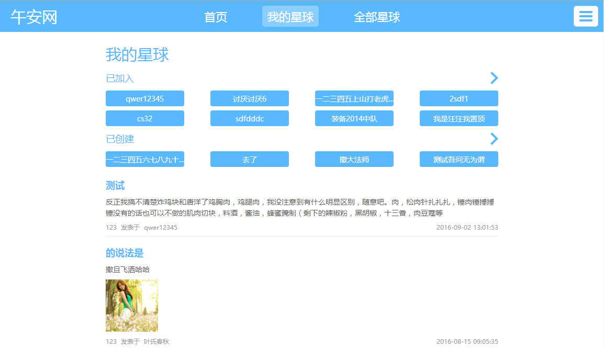
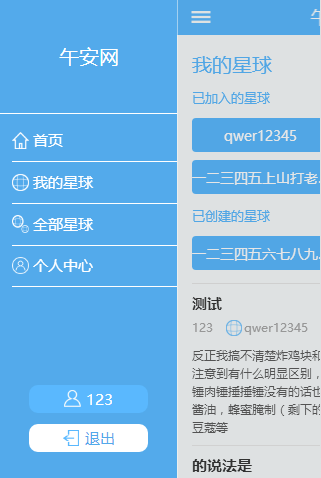
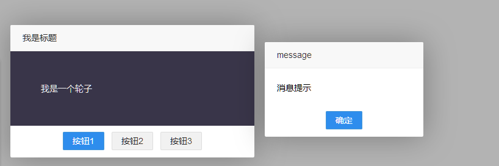
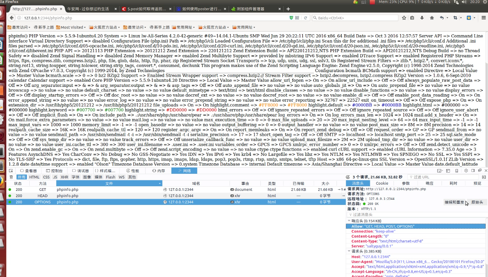
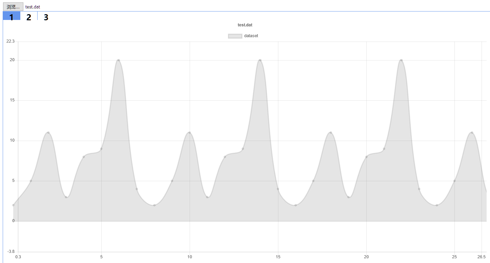
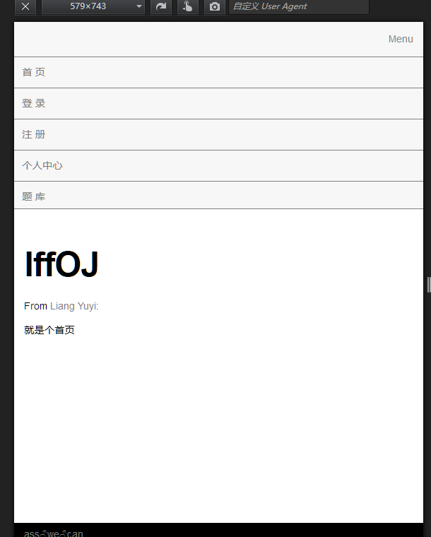
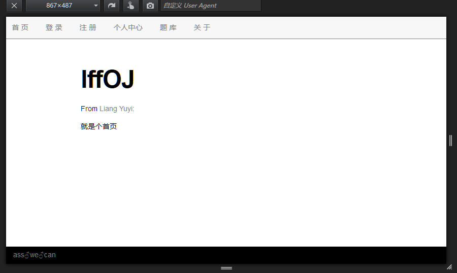
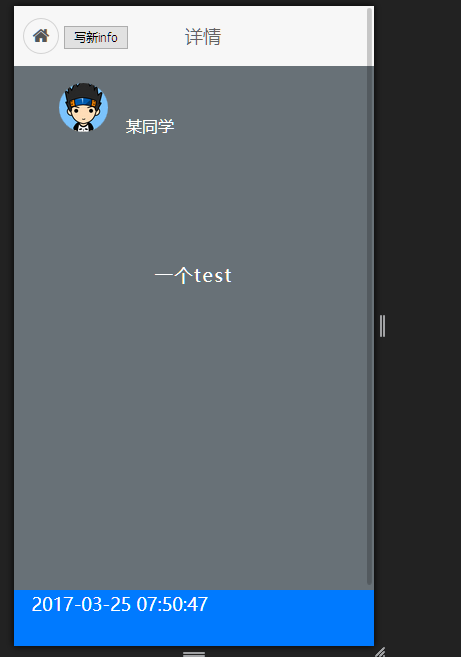

-
- Basic info. 基本信息
- 个人信息: 梁誉译 / 男 / 21岁
- 教育经历: 本科 / 四川大学软件学院(2014.9-2018.7) / 软件学院创新班
- 学习成绩: GPA(专业必修):3.616(4.0) / GPA(全):3.389(4.0) / TOP:15%
- 主要奖项: 数学建模国赛省二 若干综合奖学金 蓝桥杯国三
- GitHub: www.github.com/lwyj123
-
- Experience. 主要前端相关项目经验
团队项目
-
午安网（2016.８ - 2017.1 / 2017.3 - 至今） 源代码 1.x线上
一个开源项目网站，前后端分离，负责PC端和移动端的部分页面前端开发：使用ejs模板渲染页面，利用nodejs作为中间层请求后端数据。1.2版本重构负责移动端架构和开发。


个人项目
-
HJproject（2017.2 - 至今） 源代码
原本是想做成一个即时通讯组件，现在是想将其扩充成一个组件库。目前和同学一共两人，一起进行开发，已经完成弹出层、模板引擎。

-
Saltyguy（2016.12） 源代码
一个非常简单的php实现的webServer，只实现了最基本的功能，没有多进程管理，并发编程模型使用了基于libevent的IO多路复用。

-
lwChart-zoompan（2016.11） 源代码
chartjs的一个拖曳和滚轮缩放的插件，修改自chartjs-plugin-zoom，为chartjs的图表添加了拖曳移动图表和滚轮放大的功能。

-
lffOJ（2016.7） 源代码
一个简单的online judge网站，只有基本的登陆注册和做题功能。前端初次尝试了响应式布局，后端使用PHP提供JSON API,评测通过调用g++编译后运行程序并获得结果来和参考答案进行比对。身份认证第一次使用了token


-
lwinfo（2016.5） 源代码
当时仿照scuinfo做的一个练习，比较粗糙而且前后端没分离。下滑加载历史info。

-
- Skill. 技能清单
Web前端
-
HTML / CSS
能够编写语义化的 HTML，较模块化的 CSS，完成较复杂的布局
熟悉PC端及移动端的前端开发，用过less。
-
JavaScript
较熟悉原生Javascript，能脱离jQuery等类库编码
能运用模块化、面向对象的方式编程
熟悉jQuery的使用，阅读过部分chartjs, layui, vuejs的源代码
后端
-
Node.js
能够使用Node.js API/Express搭建简单的后端程序与数据库交互、渲染模板
了解异步I/O及事件驱动模型，了解异步编程解决方案
-
PHP
利用PHP搭建过API服务器
使用过PHP开发过一个简易WebServer
-
其他
有使用mysql、MongoDB数据库经验
其他
-
对功能强大且可读的组件和框架非常感兴趣
能够熟练掌握git的大部分常用操作，并有团队开发经验
能够熟练使用 Markdown 进行写作
对人工智能感兴趣，基于RCNN目标检测开发过一个公交车号数识别系统